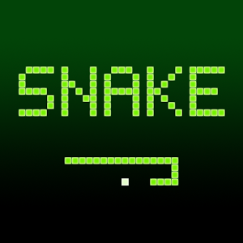

Snake
Sejarah Game Snake
Snake adalah sebuah video game sederhana yang diciptakan pada akhir tahun 1970 pada arcade. Arcade sendiri adalah platform video game seperti di bioskop-bioskop. Sejak diciptakannya, kepopulerannya meningkat dan akhirnya terkenal sebagai game klasik. Lalu sejak dirilis di Handphone Nokia pada tahun 1998, kepopulerannya terus meningkat.
How to Play
Game ini memang sudah sangat klasik dan sudah jarang terlihat. Berikut adalah cara bermainnya. Si pemain akan mengendalikan sebuah mahluk yang menyerupai ular yang akan bergerak mengitari sebuah bidang berbentuk kotak, dengan tujuan mengambil makanan yang aslinya berbentuk dot atau titik.
Selama bermain, si pemain harus berusaha untuk tidak menabrak dinding atau ekornya sendiri dan itu akan semakin susah, karena setiap kali si pemain memakan makanan, ekornya akan bertambah panjang. Kontrol-pun sangat mudah, yakni hanya atas, bawah, kiri dan kanan, ular akan berjalan secara otomatis dan tidak dapat dihentikan. Ingin mencoba bermain?